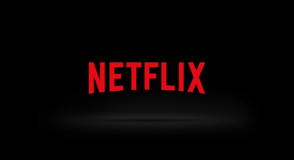

Portfólio
Grandes Projetos:
- Twitch: A Twitch é mais do que um serviço de transmissões ao vivo. É um lugar em que streamers podem compartilhar as coisas que adoram com uma comunidade de milhões, e também criar seu próprio canto acolhedor na internet. A Twitch é um lugar em que a sua voz pode ser ouvida ao vivo, e o seu público também.
- Youtube: YouTube é uma plataforma online que permite a criação e o consumo de conteúdos em vídeo via streaming. Ou seja, para assistir aos vídeos publicados, não é necessário fazer nenhum tipo de download, basta estar conectado à internet.
- Epic Games: A Epic Games, Inc., anteriormente chamada de Potomac Computer Systems e Epic MegaGames, é uma desenvolvedora norte-americana de jogos eletrônicos e softwares sediada em Cary, Carolina do Norte. Foi fundada em 1991 por Tim Sweeney e originalmente ficava localizada na cidade de Potomac em Maryland. O primeiro jogo desenvolvido pela empresa foi ZZT, lançado ainda em 1991. Além de jogos, a Epic Games é responsável pelo desenvolvimento da Unreal Engine, um motor de jogo comercial e usado em todos os seus títulos, como Fortnite e as séries Unreal, Gears of War e Infinity Blade.
- Netflix: É uma provedora global de filmes e séries de televisão via streaming sediada em Los Gatos, Califórnia, e que atualmente possui mais de 220 milhões de assinantes. Fundada em 1997 nos Estados Unidos, a empresa surgiu como um serviço de entrega de DVD pelo correio. A expansão do streaming, disponível nos Estados Unidos a partir de 2007, começou pelo Canadá em 2010. Hoje, mais de 190 países têm acesso à plataforma. Sua primeira websérie original de sucesso foi House of Cards, lançada em 2013. 
- TikTok: Também conhecido como Douyin e anteriormente Musical.ly na China, é um aplicativo de mídia para criar e compartilhar vídeos curtos.

A linguagem utilizada neste projeto é a Ruby
Saiba mais sobre a lingugem usada na Twitch:
Ruby
A linguagem utilizada neste projeto é a Python
Saiba mais sobre a lingugem usada no YouTube:
Python

A linguagem utilizada neste projeto é a C++
Saiba mais sobre a lingugem usada na Epic Games:
C++,
A linguagem utilizada neste projeto é a Python
Saiba mais sobre a lingugem usada na Netflix:
Python,

A linguagem utilizada neste projeto é a Python
e a linguagem Django cuida
do framework.
Saiba mais sobre as lingugens usadas no TikTok:
Python,
Django